Support-Tool
Accessing the Tool
The Support-Tool can be opened inside an existing SAPUI5 Application using the shortcut CTRL + SHIFT + ALT + S(upport).
Activating debug sources
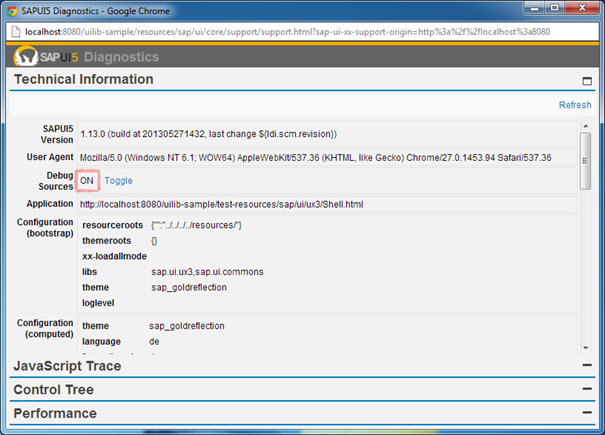
In order to use the debugging-functionalities it is important that the debug-sources are used.
The „Debug Sources“-Switch should be set to "ON". If that is not the case, it can be turned on using the "Toggle" link.
Control-Tree
The Control-Tree shows all existing controls in the application in a tree-view.
Selecting a Control
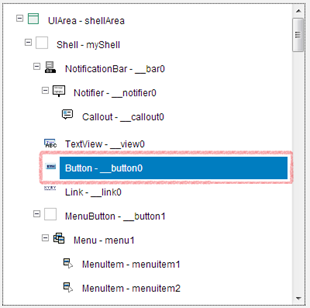
To select a control, either the entry in the ControlTree can be clicked…
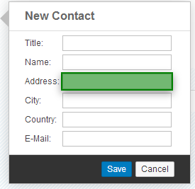
…or a control inside of the application while holding down CTRL + SHIFT + ALT and clicking on it.
Changing properties
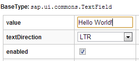
Properties of a control can be changed in the "Properties"-Tab
Showing Data-Binding Information

The "Binding Infos"-Tab shows all existing bindings for the control with some helpful information.
The binding can be refreshed by clicking on the "Refresh"-Button.
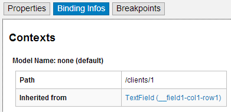
The binding-context for the currently selected control is also shown there.
The hyperlinks can be used to navigate to the specific controls.
Adding / removing Property-Breakpoints

The two checkboxes can be used to add or remove a breakpoint for the get/set-method of a control-property. The lefthand checkbox handles the get-method, the righthand one the set-method. A checked checkbox means that the breakpoint is active.
Adding / removing Method-Breakpoints

The auto completion can be used to find and select a method.
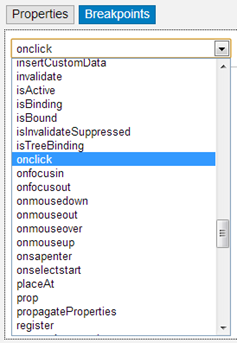
The dropdown-box can be also used to select a method.
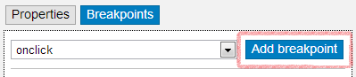
A breakpoint for the currently selected method can be added through the "Add-Breakpoint"-button or by pressing the ENTER-key.
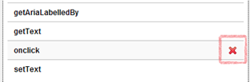
To remove a breakpoint, the red "X" can be used. To only appears when hovering over the entry.
Debugging a Method
To start debugging, the browser's debugging-tool has to be opened and activated. If this is not the case and a breakpoint is reached a alert message will open.
Once a method with an active breakpoint gets executed, the script stops, but not directly in the method.
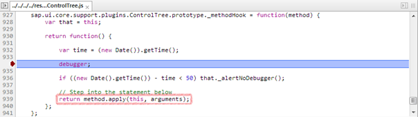
The execution stops at the "debugger" statement. To get inside the real method, the step-over/into functionality of the debugger can be used.
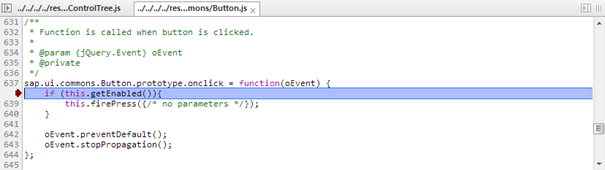
Debugging-View
The debugging-view allows to set breakpoints for methods on class-level.
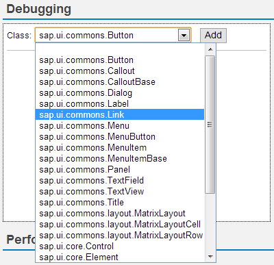
On the lefthand side a class can be selected in the same way as a method in the ControlTree.
A class can be selected by clicking on it in the class-list below.
To remove the class (and all active breakpoints of class-methods) the red "X" can be used. It only appears when hovering over an entry in the list.
The number of active breakpoints and all methods is also shown for each class once it was selected for the first time.
With the righthand view, breakpoints for methods of the currently selected class can be added / removed. This works in the same way as in the ControlTree.
XML View Conversion
- We have to admit that many our code samples are written in JavaScript … while all you Fiori developers spend most of your time in an XML editor. As there is no time to convert all our code samples we now provide a generic conversion tool.
- Follow these steps:
- Run the desired UI5 app in your browser. E.g. open some page in the test suite.
- Press CRTL-ALT-SHIFT-S to open the support tool
- Open the “Control Tree” panel
- Select the root UI area in the left side tree
- Switch to the “Export” tab and press “Export XML”
- Open the downloaded ZIP archive and extract file(s) to the file system
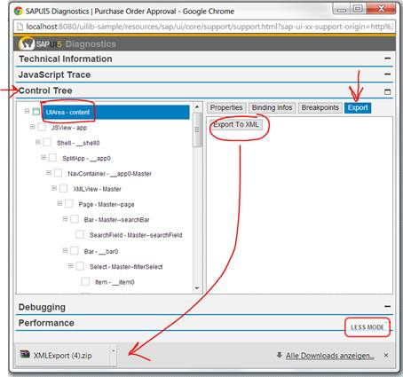
- Output
- If you app does not contain a view all the stuff will be put into one view.
- If you app contains views (and they are all loaded) they will be outputed as separate files.
- Be aware that the conversion captures the runtime state of the app which can differ from the build declaration.